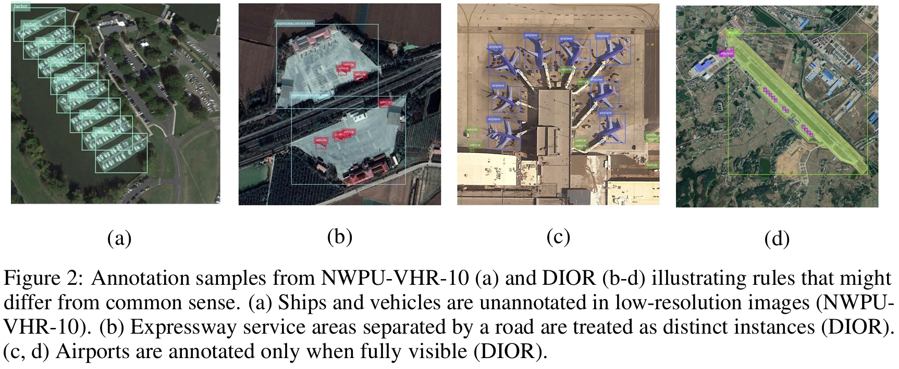
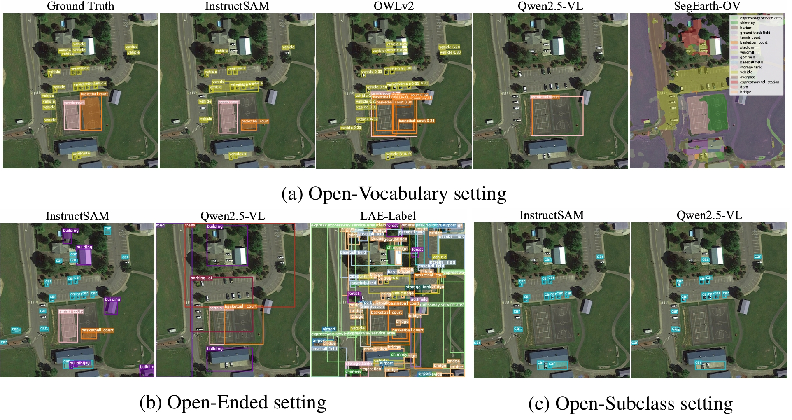
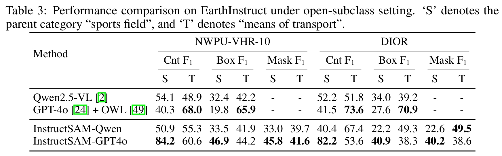

About InstructSAM
Instruction-based object recognition has emerged as a powerful paradigm in computer vision. However, the lack of semantically diverse training data has limited zero-shot performance in specialized domains like remote sensing. InstructSAM introduces a training-free framework for Instruction-Oriented Object Counting, Detection, and Segmentation (InstructCDS) tasks across open-vocabulary, open-ended, and open-subclass settings. By reformulating object detection as a counting-constrained mask-label matching problem, it enables confidence-free object recognition and achieves near-constant inference time regardless of object counts.
InstructCDS Tasks
The EarthInstruct benchmark introduces three challenging instruction settings:
- Open-Vocabulary: Recognition with user-specified categories (e.g., "soccer field", "football field", "parking lot").
- Open-Ended: Recognition of all visible objects without specifying categories.
- Open-Subclass: Recognition of objects within a super-category.

EarthInstruct Benchmark
We constructed EarthInstruct to benchmark InstructCDS capabilities in earth observation scenarios. Beyond the basic three settings, we employ dataset-specific prompts that guide LVLMs to recognize objects according to specific annotation rules, addressing versatile user requirements and real-world dataset biases (examples shown below).
InstructSAM Framework

To tackle these challenges, we decompose instruction-oriented object detection into three tractable steps:
Step 1: Instruction-Oriented Object Counting
A large vision-language model (LVLM) interprets user instructions and predicts object categories and counts.
Step 2: Class-Agnostic Mask Generation
SAM2 automatically generates high-quality mask proposals in parallel with instruction processing.
Step 3: Counting-Constrained Matching
A remote sensing CLIP model computes semantic similarity between predicted categories and mask proposals. We formulate object detection and segmentation as a mask-label matching problem, integrating semantic similarity with global counting constraints.
By combining three powerful foundation models, InstructSAM achieves superior performance across multiple tasks, outperforming both generic and remote sensing-specific models trained on large-scale datasets.


Key Results & Performance Highlights
- State-of-the-Art Performance: InstructSAM matches or surpasses specialized baselines in object counting, open-vocabulary, and open-ended object recognition tasks on the EarthInstruct benchmark.
- Training-Free & Confidence-Free: Requires no task-specific training or fine-tuning, and its matching process eliminates the need for confidence threshold filtering.
- Efficient Inference: Achieves near-constant inference time regardless of the number of objects, significantly reducing output tokens and overall runtime compared to direct generation approaches.
- Strong Generalization: Demonstrates generalization to natural images when equipped with generic CLIP models.
Open-Vocabulary Results
Open-Ended Results
Open-Subclass Results
Inference Time Analysis
Generalization to Natural Images
Analysis & Discussion
The Power of Foundation Models and Prompt Engineering
Confidence-Free vs. Confidence-Based Approaches
Traditional detectors rely on confidence scores and thresholds, which can be sensitive and difficult to tune, especially in zero-shot scenarios. InstructSAM's counting-constrained matching approach provides a robust alternative by dynamically adjusting assignments based on predicted counts from the LVLM.
Limitations & Future Directions
InstructSAM's performance depends on the capabilities of the underlying foundation models (LVLM, SAM2, CLIP). Future advancements in these models, particularly those trained on more semantically diverse remote sensing data, will likely enhance InstructSAM's capabilities further.
Getting Started
Ready to try InstructSAM? Check out our README for detailed installation and usage instructions.